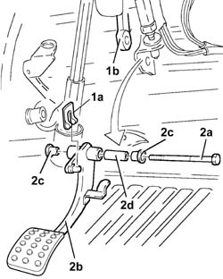
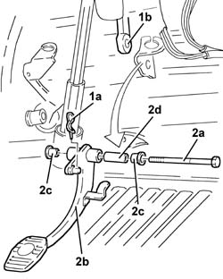
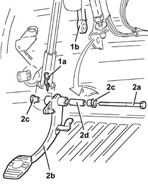

3330B23 brake pedal - r r for rhd versions
- Path
- Procedures > 33 BRAKING SYSTEM > 3330 HYDRAULIC BRAKING SYSTEM > 3330B pedal unit > 3330B23 brake pedal - r r for rhd versions
- Kind
- repair procedure (removal / refitting; the operation number is the code)
- Applies to
- engines: 1.6 TS , 1.8 TS, 2.5 V6, 3.2 V6, 2.4 JTD 10v; all production periods
- Interactive page
- https://sloeber94.github.io/elrnDB-a156/en/#/3238061
Applies to: engines: 3.2 V6; all production periods
 Removing
Removing
 Refitting
RefittingEnsure that the ignition key is in the OFF position, then disconnect the negative battery terminal (-).
 | Name | Connector |
|---|---|---|
- | Battery |
1068A20 accelerator pedal with built-in potentiometer - r r
3330B27 clutch pedal - r r for rhd versions
1. Remove the split pin (1a) and disconnect the brake servo rod (1b) from the brake pedal.
2. Undo the bolt (2a) and remove brake pedal (2b) complete with spacers (2c) and bush (2d).

Applies to: engines: 3.2 V6; all production periods
Refitting
RemovingRefit the brake pedal, complete with bush and spacers, and secure using a bolt.
Connect the brake servo pushrod return link to the brake pedal and secure with the split pin.
3330B27 clutch pedal - r r for rhd versions
1068A20 accelerator pedal with built-in potentiometer - r r
Connect the negative (-) battery terminal.
| Name | Connector |
|---|---|---|
- | Battery |
Applies to: engines: 1.6 TS , 1.8 TS; all production periods; only with equipment: Right hand drive
Removing
Refitting1068A15 accelerator pedal - r r for rhd versions .
3330B27 clutch pedal - r r for rhd versions .
1. Remove the split pin (1a), and disconnect the brake pump (1b) from the brake pedal.
2. Undo the bolt (2a) and remove brake pedal (2b) complete with spacers (2c) and bush (2d).

Applies to: engines: 1.6 TS , 1.8 TS; all production periods; only with equipment: Right hand drive
Refitting
RemovingRefit the brake pedal, complete with bush and spacers, and secure using a bolt.
Connect the brake pump to the bake pedal and secure with its split pin.
Applies to: engines: 2.5 V6; all production periods; only with equipment: Right hand drive
Removing
Refitting1068A15 accelerator pedal - r r for rhd versions
3330B27 clutch pedal - r r for rhd versions
1. Remove the split pin (1a), and disconnect the brake pump (1b) from the brake pedal.
2. Undo the bolts (2a) and remove brake pedal (2b) complete with spacers (2c) and bush (2d).

Applies to: engines: 2.5 V6; all production periods; only with equipment: Right hand drive
Refitting
RemovingRefit the brake pedal, complete with bush and spacers, and secure using a bolt.
Connect the brake pump to the bake pedal and secure with its split pin.
Applies to: engines: 2.4 JTD 10v; all production periods; only with equipment: Right hand drive
Removing
Refitting1068A15 accelerator pedal - r r for rhd versions .
3330B27 clutch pedal - r r for rhd versions .
1. Remove the split pin (1a), and disconnect the brake pump (1b) from the brake pedal.
2. Undo the bolt (2a) and remove brake pedal (2b) complete with spacers (2c) and bush (2d).
Applies to: engines: 2.4 JTD 10v; all production periods; only with equipment: Right hand drive
Refitting
RemovingRefit the brake pedal, complete with bush and spacers, and secure using a bolt.
Connect the brake pump to the bake pedal and secure with its split pin.
Topics linked from this page (4)
- 1068A15 accelerator pedal - r r for rhd versions
- 1068A20 accelerator pedal with built-in potentiometer - r r
- 3330B27 clutch pedal - r r for rhd versions
- A1B Battery ( BATTERY NEGATIVE )